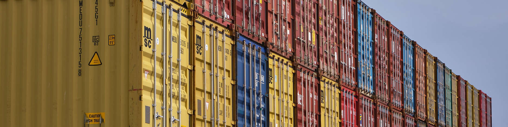

[4] Paquets¶
La informació viatja per aquest graf de xarxes en forma de paquets, que contenen una petita quantitat d’informació i de metainformació.
Els dos extrems de la comunicació han d’acordar el format dels paquets, de manera que aquests paquets es puguin produir i interpretar de manera eficient i automàtica.
Quan els paquets viatgen per una o més xarxes, es poden perdre o desordenar. Si entre dos ordinadors ha de circular un flux continu de dades, els paquets han de contenir mecanismes per detectar les pèrdues i restaurar l’ordre correcte.
[4.1] Tinc una entrega per a tu¶
No és viable establir connexions físiques entre cada parell d’ordinadors que es volen comunicar. En lloc d’això, es comparteixen relativament poques connexions per transportar missatges entre molts parells de dispositius.
Si un sol dispositiu transmet dades de manera contínua durant molt de temps, aquella connexió queda bloquejada i pot esdevenir un coll d’ampolla que impedeix que altres dispositius es comuniquin. Per evitar aquest problema, les connexions limiten la quantitat màxima de dades que es pot enviar sense interrupció. Com a resultat, els dispositius es veuen obligats a enviar dades en ràfegues discretes anomenades paquets. L’intercanvi d’aquest tipus de missatges a través d’una o més xarxes s’anomena commutació de paquets.
Nota
Leonard Kleinrock, un dels pioners de la interconnexió de xarxes, disputa l’autoria de la commutació de paquets, que sovint s’atribueix a Paul Baran i Donald Davies.
Els paquets han de ser petits perquè les connexions no quedin bloquejades durant massa temps. Alhora, volem que els paquets continguin tantes dades com sigui possible, perquè cada paquet conté dades d’overhead (sobrecàrrega, com ara les adreces que es tracten a la secció 3) que cal enviar a més de les dades de payload (càrrega útil) de l’usuari. Les xarxes fixen la longitud màxima dels paquets mitjançant un paràmetre anomenat unitat màxima de transmissió (MTU), p. ex., 1500 bytes a Ethernet.
La transmissió de paquets a través d’un enllaç de dades s’ha de fer amb cura, sobretot quan aquest enllaç és un bus compartit per diversos dispositius. Cada paquet s’ha de poder distingir individualment de la resta, cosa que es pot fer amb almenys tres estratègies:
-
Longitud fixa: tots els paquets tenen la mateixa longitud. L’emissor i el receptor han d’haver acordat aquest valor per endavant.
-
Longitud explícita: la longitud del paquet s’inclou dins del paquet, p. ex., fent servir el primer byte del paquet. L’emissor i el receptor han d’acordar com s’inclou aquesta informació i com s’ha d’interpretar.
-
Seqüències d’escapament: certes seqüències d’escapament binàries dins de les dades tenen un significat especial. Per exemple, es podria definir que el byte
11110000(0xf0) significa “final de paquet”: aquests bits han d’aparèixer després de cada paquet, i només aleshores. Llavors l’emissor podria començar a transmetre el contingut d’un paquet, seguit de0xf0. Les dues parts han d’acordar quines seqüències d’escapament fan servir, què signifiquen i com enviar dades iguals a aquestes seqüències (p. ex., hauria de ser possible enviar0xf0f0f0sense provocar un “final de paquet” fins que s’hagin transmès tots els bytes).
Nota
També és possible senyalitzar l’inici d’un paquet. En aquest cas, es fa servir una seqüència prèvia anomenada preàmbul.
Exercici 4.1
Totes les estratègies descrites més amunt es fan servir avui dia en escenaris reals, segons les característiques, els costos i els compromisos de cadascuna.
Discuteix quina d’aquestes estratègies seria la més adequada per a cadascun d’aquests escenaris:
-
Un sol fabricant dissenya el maquinari i el programari que comunica dos extrems. Una sola línia de dades s’ha de multiplexar per a diverses ordres de control i també per a diversos fluxos de dades. La prioritat és un ús eficient de l’energia i del buffer (memòria intermèdia).
-
Diversos dispositius comparteixen un bus. De tant en tant envien missatges de longituds diferents, però no un volum enorme de dades. La prioritat és el cost.
-
Diversos dispositius comparteixen un bus. Envien contínuament missatges de longituds diferents, intentant maximitzar la taxa de transmissió efectiva a través del canal. La prioritat és el throughput (cabal efectiu).
[4.2] Si us plau, emplena el formulari¶
Independentment de l’estratègia emprada, els paquets de dades normalment consten de dues parts:
-
El payload de dades: la informació que cal transmetre, i
-
Les metadades: la metainformació necessària per lliurar el payload.
La longitud pot ser un dels camps de metadades inclosos en el paquet, juntament amb altres que ajuden a identificar-ne el tipus i la funció. Els dos extrems de la comunicació han de conèixer la ubicació del payload i de les metadades, així com els camps exactes de metadades inclosos, la seva longitud i el seu significat. Totes aquestes decisions constitueixen el format del paquet o l’estructura del paquet.
Una de les maneres més habituals d’organitzar el payload i les metadades és amb un format capçalera-cos. En aquest cas, primer s’inclou tota la metainformació, seguida de les dades. Altres formats poden incloure un trailer o cua final (també conegut com a tail, que s’usa sobretot per a la detecció d’errors i la correcció), en combinació amb la capçalera o substituint-la. Totes les configuracions següents són possibles.


El format del payload d’un paquet normalment el defineix l’usuari. En canvi, el format de la capçalera està definit estrictament perquè es pugui produir i analitzar fàcilment. Aquest format sovint es presenta amb un diagrama que ajuda a identificar les posicions individuals de cada bit i de cada byte, com en l’exemple (no real) següent:
Nota
Els camps també poden tenir longituds fixes o variables, que no necessàriament s’alineen amb els límits de byte. Els camps també poden tenir una longitud igual a \(1\) bit, i en aquest cas normalment se’ls anomena flag o bit de flag.
Nota
En diagrames com l’anterior, sovint es fan servir diverses línies (files) perquè es puguin imprimir i llegir fàcilment. En aquest cas, el significat és el mateix que si tots els camps s’haguessin presentat en una mateixa línia (fila).
Exercici 4.2
El contingut de paquet següent s’ha capturat d’una xarxa, expressat en hexadecimal. Suposant que el paquet té el format de l’exemple anterior:
-
Indica el valor de cada camp (longitud, importància, tipus, mode, adreça de destinació i payload.
-
Pots endevinar el significat del payload?
00 0c 00 f3 bb bb bb 00 68 65 6c 70
Exercici 4.3
El codi següent accepta dos arguments: (1, sys.argv[1]) la ruta d’un fitxer d’entrada, i (2, sys.argv[2]) la ruta d’un fitxer de sortida. Es llegeixen els primers 255 bytes del contingut del fitxer d’entrada, es formategen com un paquet, i els bytes d’aquest paquet s’escriuen al fitxer de sortida.
snippets/simplepacketoutput.py
with (open(__file__, "rb") as input_file,
open("/dev/stdout", "wb") as output_file):
# Read at most 255 bytes from the file
payload: bytes = input_file.read(255)
# The + operation concatenates bytes
output_file.write(bytes(len(payload)) + payload)
\x00\x00\x00\x00\x00\x00\x00\x00\x00\x00\x00\x00\x00\x00\x00\x00\x00\x00\x00\x00\x00\x00\x00\x00\x00\x00\x00\x00\x00\x00\x00\x00\x00\x00\x00\x00\x00\x00\x00\x00\x00\x00\x00\x00\x00\x00\x00\x00\x00\x00\x00\x00\x00\x00\x00\x00\x00\x00\x00\x00\x00\x00\x00\x00\x00\x00\x00\x00\x00\x00\x00\x00\x00\x00\x00\x00\x00\x00\x00\x00\x00\x00\x00\x00\x00\x00\x00\x00\x00\x00\x00\x00\x00\x00\x00\x00\x00\x00\x00\x00\x00\x00\x00\x00\x00\x00\x00\x00\x00\x00\x00\x00\x00\x00\x00\x00\x00\x00\x00\x00\x00\x00\x00\x00\x00\x00\x00\x00\x00\x00\x00\x00\x00\x00\x00\x00\x00\x00\x00\x00\x00\x00\x00\x00\x00\x00\x00\x00\x00\x00\x00\x00\x00\x00\x00\x00\x00\x00\x00\x00\x00\x00\x00\x00\x00\x00\x00\x00\x00\x00\x00\x00\x00\x00\x00\x00\x00\x00\x00\x00\x00\x00\x00\x00\x00\x00\x00\x00\x00\x00\x00\x00\x00\x00\x00\x00\x00\x00\x00\x00\x00\x00\x00\x00\x00\x00\x00\x00\x00\x00\x00\x00\x00\x00\x00\x00\x00\x00\x00\x00\x00\x00\x00\x00\x00\x00\x00\x00\x00\x00\x00\x00\x00\x00\x00\x00\x00\x00\x00\x00\x00\x00\x00\x00\x00\x00\x00\x00\x00\x00\x00\x00\x00\x00\x00with (open(__file__, "rb") as input_file,
open("/dev/stdout", "wb") as output_file):
# Read at most 255 bytes from the file
payload: bytes = input_file.read(255)
# The + operation concatenates bytes
output_file.write(bytes(len(paylo
-
Descriu el format de paquet que es fa servir al codi, i les seves limitacions.
-
Amplia el format de paquet de manera que
-
Els paquets puguin tenir més de 255 bytes
-
Es pugui codificar l’adreça del dispositiu de destinació
-
-
Proporciona un diagrama de bytes del nou format, així com una explicació del sistema d’adreçament que fas servir.
-
Modifica el codi perquè generi paquets amb el format que proposes.
Nota
Llenguatges com Python poden distingir entre fitxers que contenen text i fitxers que contenen dades binàries. Al codi anterior, els fitxers s’obren en mode binari amb els modes 'rb' i 'wb'.
Quan s’obren en mode binari, els bytes del fitxer es representen directament amb un objecte bytes, un vector d’enters entre \(0\) i \(255\). En mode text, el mètode open processa (descodifica) aquests bytes una mica més, i retorna una cadena que pot contenir caràcters especials com accents o glifs no llatins. (llegir-ne més...)
[4.3] No paren d’arribar¶
Quan es desenvolupen aplicacions que fan servir capacitats de xarxa, sovint és útil imaginar la comunicació com un flux, és a dir, com una canonada conceptual on posem les nostres dades (qualsevol quantitat de dades) per un extrem, i surten per l’altre. Si tenim aquesta capacitat, aleshores és molt més fàcil enviar fitxers de qualsevol mida i transmetre una quantitat inacabable d’àudio o de vídeo. Malauradament, tot el que tenim per simular aquests fluxos són paquets.
Sovint cal reenviar els paquets a través de diverses xarxes. Els routers (encaminadors) no són perfectes i de vegades estan inoperatius o mal configurats, de manera que no tots els paquets arriben a la seva destinació. A més, paquets diferents es poden lliurar per rutes diferents que poden tenir longituds diferents, de manera que els paquets poden arribar desordenats.
Si volem simular un flux de dades, els paquets han de contenir prou metainformació perquè es puguin detectar les pèrdues i restaurar l’ordre correcte. Això introdueix un overhead que no és adequat en tots els escenaris –p. ex., latència molt baixa–, de manera que algunes aplicacions basen la seva comunicació de xarxa en missatges en lloc de fluxos.
Quan calen fluxos, es fa servir el concepte d’offset (desplaçament) per tornar a muntar diversos missatges en un sol flux. Cada paquet conté alguns bytes del flux de dades, i l’offset n’indica la ubicació exacta dins d’aquest flux.
Exercici 4.4
El diagrama següent descriu un flux de 48 bytes produït per un node d’origen, així com els paquets en què es va dividir abans de la transmissió:
-
Descriu la capçalera mínima que es pot fer servir per transmetre aquest flux.
-
Suposant que el destinatari rep primer el paquet 2, seguit del paquet 0, i que els altres paquets es perden: quins bytes del flux coneix el node de destinació, i quins bytes són desconeguts?
-
Com pot saber el node d’origen que alguns paquets no s’han lliurat?
-
Què passaria si la destinació rebés un missatge fals, amb offset \(7\) bytes i longitud \(4\) bytes?